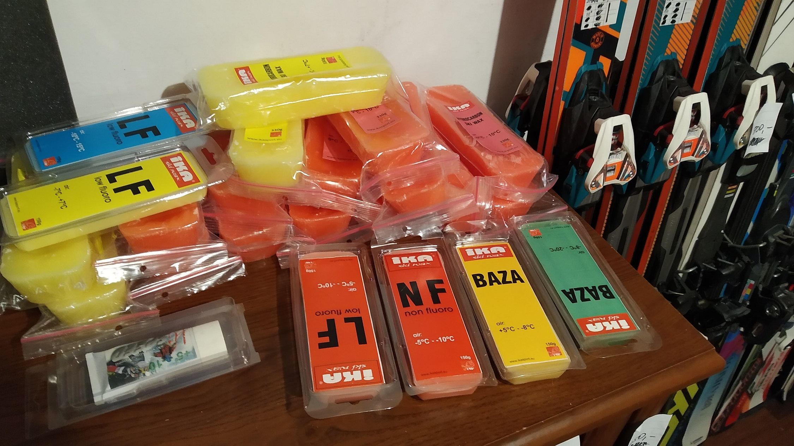
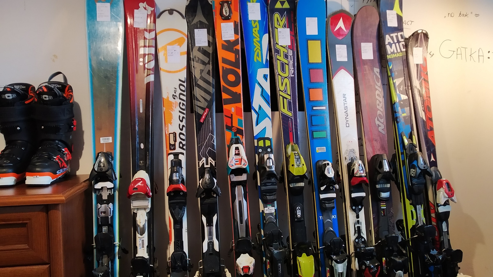

W pierwotnej wersji to miał być sam kalkulator do obliczania DINów na wiązaniu. Potem uznałem, że to
trochę łyso i dorzuciłem parę zdań o tym jak wybrać narty przed sezonem, jak zadbać o to, żeby jako
tako jeździły. No i jak nie wrócić z kulfonem w gipsie. Na tę chwilę zamysł tej strony jest taki,
żeby stworzyć miejsce gdzie dostępny będzie komplet informacji, począwszy od doboru sprzętu, aż do
jego serwisowania. Informacje te są dostępne w internecie, jednak zazwyczaj porozrzucane są po
różnych stronach.
Nie mam raczej zamiaru uczyć tego jak jeździć, natomiast chętnie podziele się pewną wiedzą,
dzięki której zwiększysz swoją szansę na powrót bez gipsu i z bananem na paszczy.
Jak starczy mi weny to będę stopniowo poszerzał zakres tematów wchodząc w bardziej zaawansowane
kwestie.
Może też być tak, że wiesz jak dobrac sprzęta. Wiesz jak smarować.
Chcesz tylko przeliczyć sobie ile DIN nakręcić na wiązaniu, to w takim razie zapraszam do
kalkulatora.
Opiera się on na tabelach Salomona i pewnie nie różni zbyt wiele od innych dostępnych w internetach,
poza faktem, że jest moim zdaniem ładniejszy.

Od czego w ogóle zacząć temat?
Przede wszystkim muszę zwrócić uwagę, że jeździć da się na wszystkim, tylko niekoniecznie się to dla
nas skończy korzystnie.
Zanim wybierzesz się na narty, pozbieraj komplet sprzętu czyli:
narty - odpowiednie dla twoich umiejętności i gabarytów
buty - niestety ale muszą być dobrze dopasowane, nie po wujku 4 rozmiary za duze
kijki - też zdecydowanie dobrze je mieć, wiem że często na początek ludzie nie sądzą aby
im były niezbędne, jednak uwierzcie, są
kask i gogle - absolutne must have, i nie, to że jeździsz powoli nie sprawia, że kasku
nie potrzebujesz, bo równie dobrze mozesz się wyglebić idąc po parkingu
ciuszki - spodnie, kurtka, rękawiczki, sweterek - no tu chyba logiczne, nie polecam
jazdy w jeansach i skórzanych kurtkach, jak to czasem widać
ochraniacze - poza kaskiem, który jest niezbędny, warto też zaopatrzyć się w żółwika, to
akurat można sobie odłożyć na potem ale warto
Tak mniej więcej wygląda lista rzeczy które trzeba mieć przed wyjazdem. Trochę tego jest ale jeżeli
chcesz czerpać z jazdy frajdę i spędzić ten czas bezpiecznie, to niestety ale musisz trochę
wycebulić na początek.
Z plusów to narty, buty i kijki można wypożyczyć, przy czym zalecam doczytac samemu (niżej na tejze
stronie) jaki rozmiar butów wziać i jaką długość nart, bo w wypożyczalniach zdarzają się osoby,
które o nartach wiedzą mniej niż wy i wciskają syf.
Jeśli zaczynasz całkowicie od zera, to dobrze wziąć sobie instruktora, chociaż na 2-3 godzinki.
Zaczynanie samemu może być cieżkie i da jedynie frustrację. Przy czym, polecam brac kogoś kto
wydaje się mieć jakieś pojęcie i prezentuje się jako tako. Jeśli widzisz, że osoba która ma
Ciebie uczyć jeździ gorzej niż inni na stoku, to lepiej go zmień.
Wybór sprzętu
Wybór nart
Narty dobieramy na podstawie kilku czynników
twoje umiejętności
twoje gabaryty - waga i wzrost
trasy po jakich będziesz jeździł
styl jazdy
Dosyc podstawowy podział nart
freeride’ówki - szerokie i stosunkowo długie narty do jazdy w kopnym śniegu, niespecjalnie
nadają się na ubite trasy, raczej dla ludzi którzy już wiedzą czego chcą
all mountain - najszersza grupa nart, pozwalają przycisnąć na ubitym, w puchu raczej średnio
sobie radzą, dostępne są w bardzo wielu wariantach w zależności od naszych preferencji i budżetu
slalomki (SL) - narty o geometrii pozwalajacej na jazdę ciasnymi skrętami, zazwyczaj ciut
krótsze
gigantki (GS) - narty o geometrii pozwalajacej na jazdę długimi skrętami, zazwyczaj ciut dłuższe
woman & kids - grupa połączona, ponieważ nie są aż tak popularne, występują w wersjach Sl jak i
GS, zazwyczaj są lzejsze, mają ładne kolorki, itp.
skitury - narty stworzone do podchodzenia w górę jak i zjazdu, zazwyczaj używane wraz z fokami
pozwalajacymi na podchodzenie pod górę, wyposażone w specjalne wiązania
biegówki - narty do biegów narciarskich, na nich raczej nie pojeździsz
Długość nart jaką powinniśmy wybrać
Tutaj narosło wiele mitów, biorących się z lat gdy jeździło się na popularnych ołówkach.
Nie da się jednoznacznie powiedzieć, że osoba ma mieć takie a takie narty. Jest to determinowane
przez czynniki wymienione już wczesniej, jednak można wyłonić pewne wstępne wytyczne.
W przypadku nart slalomowych mówimy zazwyczaj o nartach o długościach od 150-170 cm, raczej polecam
brać narty krótsze o 5-15 cm od swojego wzrostu (w zależności od Twoich umiejętności), mieszczące
się w wymienionym zakresie. Jeśli masz np. 190 cm wzrostu, to raczej lepiej wziąć gigantki, bo
slalomki o długości 180 cm nie istnieją. Jeśli jeździsz dobrze, to możesz wziąć klasyczne 165 lub
coś zblizonego, jednak krótka narta przy takim wzroście może wymagać większych umiejętności i będzie
mniej stabilna, z kolei przy większych długościach to już nie slalomka.
Gigantki mieszczą się w przedziale 160-195cm, przy dobieraniu zazwyczaj poleca się coś w granicach
0-10cm ponizej wzrostu, wersje najczęściej spotykane w sklepach to 170-180 cm. Tutaj znowu trzeba
się kierować kilkoma czynikami. Jeśli jeździsz dobrze, to ogarniesz narty nawet dłuższe od Ciebie.
Jeśli gorzej to polecam wziąć coś w długości 0-5-10cm poniżej wzrostu.
Reasumując można napisać że:
jeżeli chcesz coś slalomowego to weź nartę około 5-15cm krótszą od Twojego wzrostu, im
lepiej jeżdzisz tym mozesz dłuższą, jednak nie przesadzaj, slalomka to coś pomiędzy 150 a
170 cm
do długich skrętów mozesz zacząć od czegoś pomiedzy 0-10 cm ponizej wzrostu i analogicznie
jak wyzej, im lepiej jeżdzisz tym mozesz coś dłuższego brać
przy nartach uniwersalnych czyli All Mountain musisz ją przyporzadkować do jednej z ww.
grup. Im promień narty wiekszy tym blizej jej do gigantki, im mniejszy, tym bliżej slalomki.
Wybór butów
Buty mają być dopasowane. Kropka.
Przy przymierzaniu butów nie bierz ich nigdy za dużych. Mierz je na cienką skarpetkę, z dwóch
powodów. Po pierwsze jeżeli będziesz miał zbyt dużo luzu w bucie to będzie ci marzła stopa. Grubsze
skarpetki nic nie dadzą, jak kupisz buta 2 rozmiary za duzego. Po drugie, podczas jazdy wewnętrzny
kapeć zawsze lekko się ubije, niezależnie od tego jakiego buta kupisz, jak weźmiesz za luźnego to ci
bedzie ci w nim latac stopa.
I jeszcze jedna ważna rzecz! Mocniejsze spięcie klamer w bucie nie sprawi że będzie on
twardszy! Jeżeli Twój but jest zbyt miękki lub zbyt twardy to nalezy kupić inny o
mniejszej/większej twardosci. Spinanie klamer aż do bólu, likwiduje tylko lekkie luzy jakie ma stopa
w bucie, a nie utwardza go.
Reszta szpeju
Kask powinniśmy wybrac tak, żeby nie miał luzów, głupio sobie rozbić głowę o wnętrze kasku. Gogle z
kolei mają przylegać górną krawędzią do kasku. Jak Ci widac ponad goglami połowę czoła, to jest
obciach. No i piździ.
Kije mają mieć taką długość, że jak go trzymamy, to ręka ma tworzyć kąt około 85 stopni.
Kurtka, spodnie i majty to już pozostawiam pod prywatne decyzje, zależne głównie od grubości
portfela.

Serwis nart
Po co w ogóle serwisować narty?
Bo podczas jazdy tępią się krawędzie. A ślizgi się psują i podczas jazdy i podczas leżenia w piwnicy.
A tak na serio to od krawędzi zależy nie tylko to jak narta trzyma podczas skrętu (bo to chyba
wiadomo powszechnie) ale też w jaki sposób będzie ona rozpoczynała skręt, wychodziła z niego oraz
czy podczas jazdy na wprost nie będzie zbyt nerwowa.
Slizg jest z kolei elementem o który powinniśmy dbać cały rok, ale bądźmy szczerzy, ja wiem że jak
ktoś odda chociaż raz w roku narty do Decathlonu na serwis, to już jest sukces.
Co się dzieje gdy narta nie jest nasmarowana? Slizg się utlenia, co uwidacznia się poprzez
powstawanie szarego nalotu, zmniejsza się jego hydrofobowość i zwiększa szorstkość. Wpływa to nie
tylko na to, że pojedziemy wolnej ale też moze być Ci trudniej zainicjować sam skręt albo hamowanie.
Czynności które wykonuje się podczas serwisu:
wyrównanie ślizgu i nałożenie struktury
naostrzenie obu powierzchni krawędzi (bocznej i dolnej)
nałożenie smaru na ślizg
ewentulane wyregulowanie wiązań jeśli dupa spuchła przez wakacje albo mamy nowe buciki
(dodatkowo) zalewanie dziur w ślizgu
(dodatkowo) wygrzewanie ślizgu
no i inne bajery jak jesteś jakimś pro koksem
To teraz małe rozwinięcie co i po co.
Struktura ślizgu.
To ten wzorek jaki masz na ślizgu, takie małe kreseczki ułożone w większe kreseczki, zazwyczaj
ukośne.
Struktur jest kilka rodzajów, jak mi się kiedyś zachce to zrobie dalszą część poradnika o tym. Na
razie starczy info, że fajnie by było zeby owa struktura była.
Potrafi ona zmienić to jak narta ślizga się w różnych warunkach ale to raczej zaden amator nie ma
szans odczuć. Zazwyczaj i tak każdy porządny serwis wam ją zrobi przy wyrównywaniu ślizgu wieć w
sumie bez problemu.
Krawędzie ostrzone są zarówno od spodu jak i z boku. Trzeba jednak wspomnieć że to nie nóż w kuchni,
który ostrzymy na oko, więc jak ktoś chce zrobić od ręki pilnikiem warsztatowym to nie polecam.
Ostrzymy je pod odpowiednim kątem. To pod jakim kątem krawędź zostanie zaostrzona wpływa na naszą
jazdę. Znaczy no. Jak umiesz dobrze jeździsz to poczujesz różnice przy zmianie, jak jesteś typowym
amatorem to pewnie nie odczujesz różnicy w sposób świadomy ale moze być ci np. ciężej skręcić.
W przypadku amatorów polecanymi kątami są:
89 lub 88 stopni dla powierzchni bocznej
0,7 lub 0,5 stopnia dla powierzchni od strony ślizgu ( tzw. podwieszenie)
Ja w nartach na niedzielne jazdy mam 88/0,5 i to jest ok do takiego w miare snucia się po stoku.
89/0,7 będzie bardziej stabilne na prostych i troche gorzej trzymała w skręcie. A z kolei 87/0,5 to
już raczej do jazdy na tyczkach.
Smarowanie
Co ile powinno się smarować narty? No ja smaruje co jazde. A przynajmniej smarowałem w zeszłym roku
jak miałem czas.
Generalnie po smarowaniu ślizg powinien być czarny ( no chyba ze masz komórki Atomica albo inny
model nart z kolorowym ślizgiem, to wtedy nie xD ) po jeździe zacznie się robić szary począwszy od
krawędzi. Wynika to z tego, że zwyczajnie się on tam wyciera. Także jak widzisz że robi ci się sporo
tego szarego to zgodnie ze sztuką wypadałoby oddać nartę do smarowania.
To jak szybko zejdzie smar zalezy od śniegu (im bardziej zmrożony tym szybciej ściera), od stylu
jazdy, od rodzaju smaru.
Smarowanie to też zabieg który odczuć może każdy kto trochę pojeździ. Faktycznie robi różnice gdy
narta jest świeżo zrobiona.
Tylko błagam, pamietaj - smar na slizgu trzyma się dzien/dwa, moze ciutke dłużej. Potem zostają
resztki.
Więc nie opowiadaj na krzesełku jak to Ci narty zajebiście jeżdzą bo w grudniu oddałeś do smarowania
w lokalnym Janusz-ski, podczas gdy jest luty. xD
Wiązania to już krótka piłka. Regulujemy siłę wypięcia oraz rozsuwamy wiązania z uwagi na długość
buta.
O ile długość buta jest raczej jasno określona, to do okreslania potrzebnej siły wypięcia polecam
skorzystac z kalkulatora, do który znajdziej kawałek niżej. Okreslenie poprawnej siły wypięcia
wiązania jest ważne, ponieważ jeżeli wiązanie wypnie Ci przy zbyt małej sile, to przeorasz paszczą
śnieg. Z kolei przy ustawionej zbyt duzej sile, narta przy dzwonie może się nie wypiąć poprawnie co
skutkuje często gipsem.
Serwis ręczny w domu
Dla osób, które jeżdżą więcej niż mniej, fajnym rozwiązaniem moze być opcja serwisowania sprzętu w
domu.
Poza odrobiną ćwiczeń potrzebne jest jedynie trochę sprzętu, za który niestety trzeba trochę
wycebulić na początek.
Ja osobiście polecam taki zestawik: (pozycje z * to pozycje dodatkowe - przydają się ale nie są
niezbędne przy pierwszym kupnie)
żelazko do smarowania - na początek starczy nawet zwykłe, byle nie miało dziurek na płycie
grzejnej, ja miałem stare radzieckie i było nawet spoko
cyklina - do zdzierania warstwy smaru po rozsmarowaniu go żelazkiem
smary - no to wiadomo czymś trzeba smarować
szczotki - potrzebne do usuniecia nadmiaru smaru po cyklinowaniu, najlepiej mieć szczotkę
twardą (z w miarę krótkim włosiem)i miękką do polerowania lub tzw. combo, czyli szczotka z
włosiem nylonowym i miedzianym/mosiężnym (fajna uniwersalna)
kątownik lub ostrzałka - niebędne do ostrzenia krawędzi bocznej, są takie ze stałym kątem
nachylenie lub regulowane, ja osobiscie polecam kątownik + szczypce bo te regulowane z
czasem łapią luzy
pilniki - najlepiej jeden stalowy (medium) i jeden diament(coarse)
gumki do ski stopów
* wincyj pilników !!! dobrze mieć ze 2 stalowe i 3 diamenty żeby gradacja szła małymi
kroczkami i można było ładnie wypolerować krawędź
* prawidło - służy do ostrzenia krawędzi od strony ślizgu, ale generalnie niezbyt się
przydaje bo żeby cokolwiek zrobić z dolną powierzchnią krawędzi, to trzeba zeszlifować też
ślizg, więc raczej robi się to tylko na maszynie
* pazur - w sumie to nie wiem czy nie powinien być w obowiązkowym zestawie bo jest niezbedny
do usunięcia tworzywa z nad krawędzi, jednak z drugiej strony jak wam to ktoś zrobi raz, to
potem już nie trzeba przez pewien czas
*imadło narciarskie - tutaj jeszcze ciężej powiedzieć czy jest ono niezbędne czy nie,
na pewno sprawia, że wszelkie prace są 5x bardziej przyjemne, ale tez kosztuje dużo za dużo,
da się go wykonać domowymi sposobami jak ktoś ma chęci
Jak wykonywać poszczególne czynności
usunięcie ABS - za pomocą pazura usuwa się nadmiar tworzywa znajdujacego się nad krawędzią,
które może zatykać pilniki, na szczęście wystarczy to zrobić raz i potem już nie trzeba
ostrzenie krawędzi - ostrzymy krawędź boczną, ślizg polecam sobie zabezpieczyć taśmą
malarską, zakładamy pilnik na kątownik/otrzałkę i długimi ruchami przesuwamy po krawędzi bez
użycia siły, najpierw pilniki stalowe, potem po kolei diamenty (jeśli mamy więcej) aż do
momentu jak po przesunięcia wierzchem dłoni po krawędzi, da się wyczuć drapanie
smarowanie - grzejemy żelazko i przykładając do niego smar, topimy go nad nartą, przesuwając
po całej jej długości, potem przesuwając żelazkiem po ślizgu, rozprasowywujemy po nim smar,
po tym jak wyschnie należy go zedrzeć cykliną, a resztki wyszczotkować najpierw twardą,
potem miękką szczotą
Kalkulator siły wypięcia wiązania
Aby okreslić wartość jaką ustawiamy na wiazaniu, należy uwzglednić kilka czynników, indywidualnych
dla każdej osoby.
Przede wszystkim musisz przyporządkowac się do jednej z grup zaawansowania, pokazanych poniżej. Po
najechaniu kursorem rozwinie się krótki opis danej kategorii.
Parametry wybieraj z list rozwijanych, po wybraniu wszystkich, automatycznie pokaże się wynik. Jeżeli
zauważysz X, to znaczy, że niestety nie mieścisz sie w żadnej z grup.
Świeżak
Pierwszy raz na nartach. Fajnie by było gdybyś przeżył ale nie jesteś
zbyt nachalny w tych oczekiwaniach. Jeździsz powoli i ostrożnie, po ratrakowanych
stokach.
Niedzielny Janusz
Ze szwagrem kupujesz raz na sezon całodzienny w Szczyrku i dziczysz aż do
otwartego złamania. Ewentulanie jeździsz już trochę ale bez szaleństw i niezbyt szybko.
Zwykły ludź
Pakujesz w niedziele kaszojady i żonę do rodzinnej Skody Octavii i
ciśniesz na Biały Krzyż. Jeździsz w miarę dobrze i czasem szybciej. Czasem zjedziesz
poza trasę.
Dzik
Parę razy byłeś na tyczkach ale nie pykło. Triggerują Cię janusze co
blokują Golgotę jadąc ześlizgiem. Ciśniesz agresywnie po stromym jak i poza trasą.
Turbodzik
Nakurwiasz slalom jak pojebany. Kasprowy to Świnto Góro i umisz skręcać z
karwinga. Generalnie to siła, prędkość, styl, pyk pyk.
Pozor!
Wartość tutaj obliczona jest wartością teoretyczną i choć jest ona miarodajna to nie należy jej brac
bezkrytycznie.
Wynika to z faktu, iż sprężyny w wiązaniach wraz z upływem czasu zmieniają swoje parametry.
Jeśli masz stare wiązanie obliczona siła może być zbyt niska i wiązanie może wypinać zbyt wcześnie.
W celu dokladnego sprawdzenia potrzebnej siły wypięcia najlepiej udać się do porządnego serwisu,
gdzie przy pomocy maszyny ustala się siłę wypięcia.
Jazda ze źle ustawionym wiązaniem jest prostą drogą do złamania kulfona więc polecam pochylić się nad
tematem.
Kalkulator wykonany w oparciu o wytyczne Salomona na sezon 17/18.

 Po co powstała ta strona?
Po co powstała ta strona?